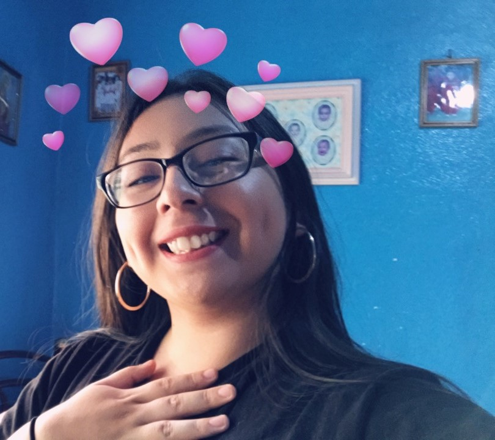
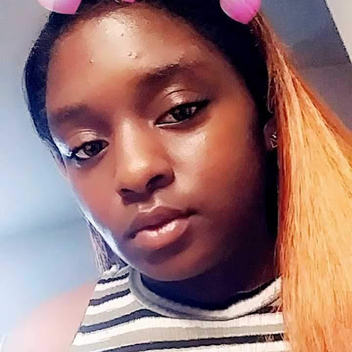

Get to know our team and each of our members.
Izzie Kirby:

Aside from basic reproductive knowledge, like what a cervix is along with other anatomical junk, I have next to no knowledge of how protect myself from STDs. I honestly think that it's ridiculous that people think abstinence only education is a viable option, as it only allows for people to know how to have unsafe sex and I want to contribute to the solving of this problem. I like socializing, playing video games, and coding! I attend Irma Rangel Young Women's Leadership School and am a rising senior. I am a girl who codes.
Angelica Vega:
I'm 17 and have only been educated about sexual diseases once. I saw this as a problem and came up with the idea for this website in hopes to educated my fellow classmates as long as everyone else. Other than that I am a big fan of conspiracy theories, superheroes, and vines. My favorite food is rice and I love hanging out with my family. I'm a rising senior at Irma Rangel who is excited to become a college student and I am a girl who codes.
Eva Walker:
Hi I'm 17 and want to be an advocate for people who do not get a good sex education. I think in this day and age it is important to understand the dangers of sex. As a persn I ikes puppies, babies, animals, food,and social justice. I dislikes Hate(rs) and injustice. I want to make the world right. I am a girl who codes.
Daniela Portillo:

In my whole seventeen years I have grown up in a state that enforces an abstinence-based health curriculum. Just like me, I am sure there are others with little to no safe-sex education.This page serves to not only inform others, but myself as well. I am a rising senior that attends Irma Rangel Young Women's School. I am a girl who codes.